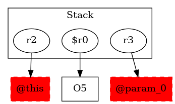

-1 : r2 := @this: Test2
-1 : r3 := @parameter0: testcase.Test2
5 : $r0 = new testcase.Test2
5 : specialinvoke $r0.|testcase.Test2: void |init|()|() -> class soot.jimple.internal.JInvokeStmt
6 : return $r0
